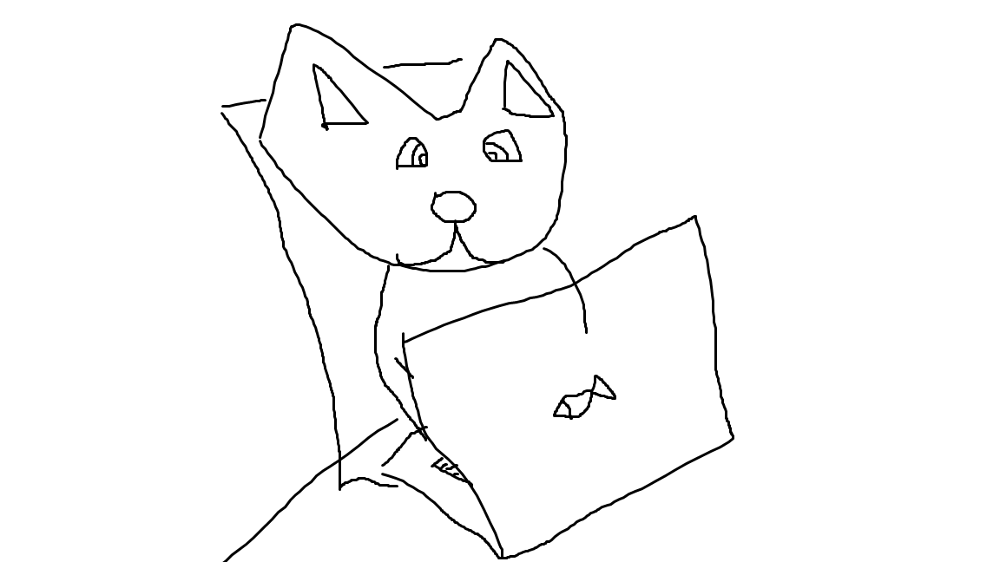

Historia sobre los gatos
La historia del gato se basa sobre todo en la percepción que el hombre tiene del pequeño felino. Se cree que la domesticación del gato comenzó entre el 7500 a. C. y el 7000 a. C. La visión que el hombre tiene del gato difiere totalmente de una época a otra, siendo desde la antigüedad, cuando lo veneraban, hasta la Edad media, cuando los quemaban en las hogueras, pensando que era un animal diabólico.La historia del gato se basa sobre todo en la percepción que el hombre tiene del pequeño felino. Se cree que la domesticación del gato comenzó entre el 7500 a. C. y el 7000 a. C. La visión que el hombre tiene del gato difiere totalmente de una época a otra, siendo desde la antigüedad, cuando lo veneraban, hasta la Edad media, cuando los quemaban en las hogueras, pensando que era un animal diabólico.